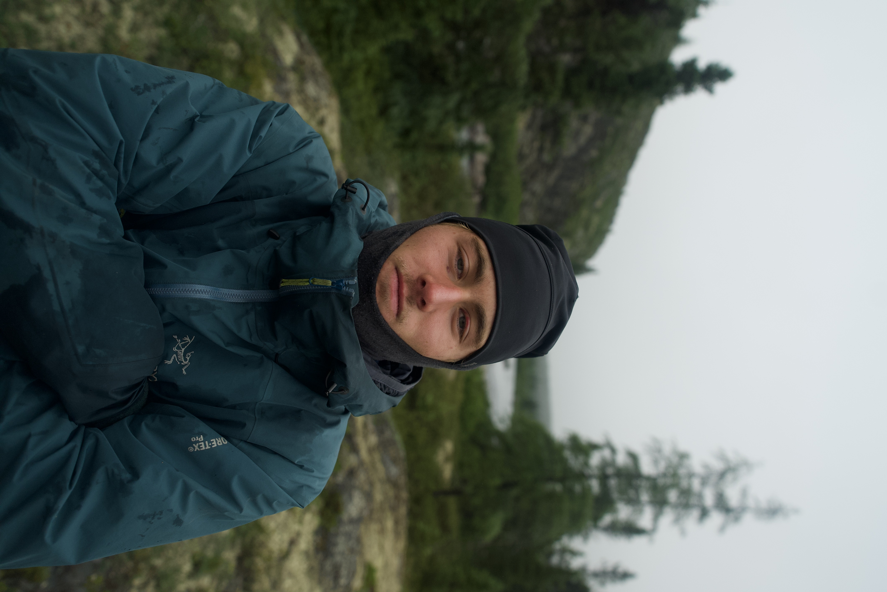
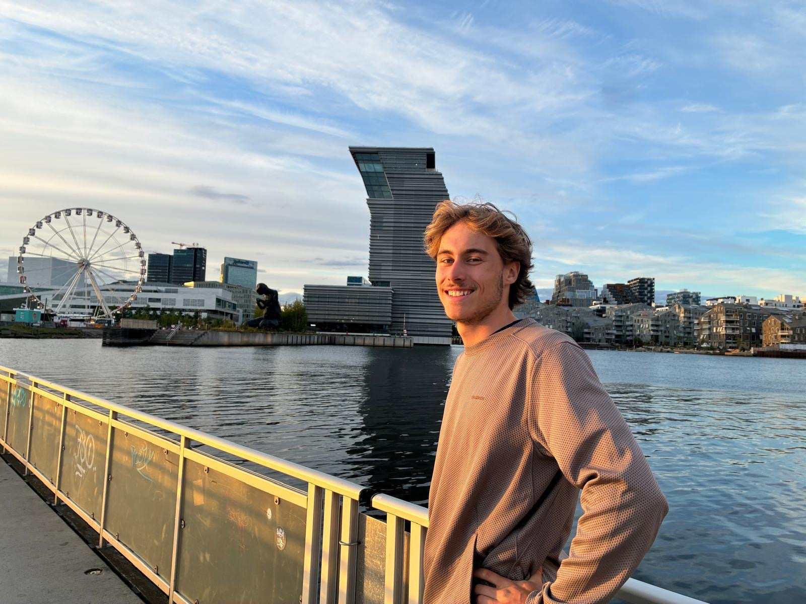

Yo, je suis Nils. Passionné de sciences et de sport, j'ai grandi dans les Alpes françaises et j'y ai développé un amour pour la nature et la montagne. J'étudie actuellement à Centrale Lille pour poursuivre ma passion pour les sciences. Ce site rassemble en un seul endroit toutes mes facettes, et garde une trace de tous mes trips !